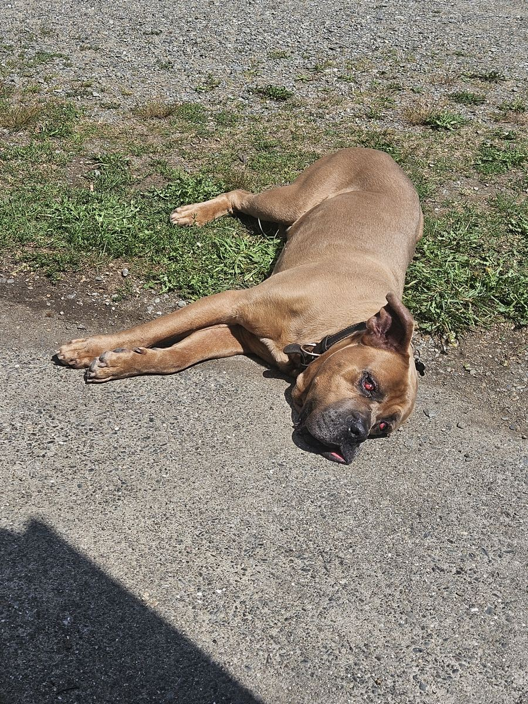
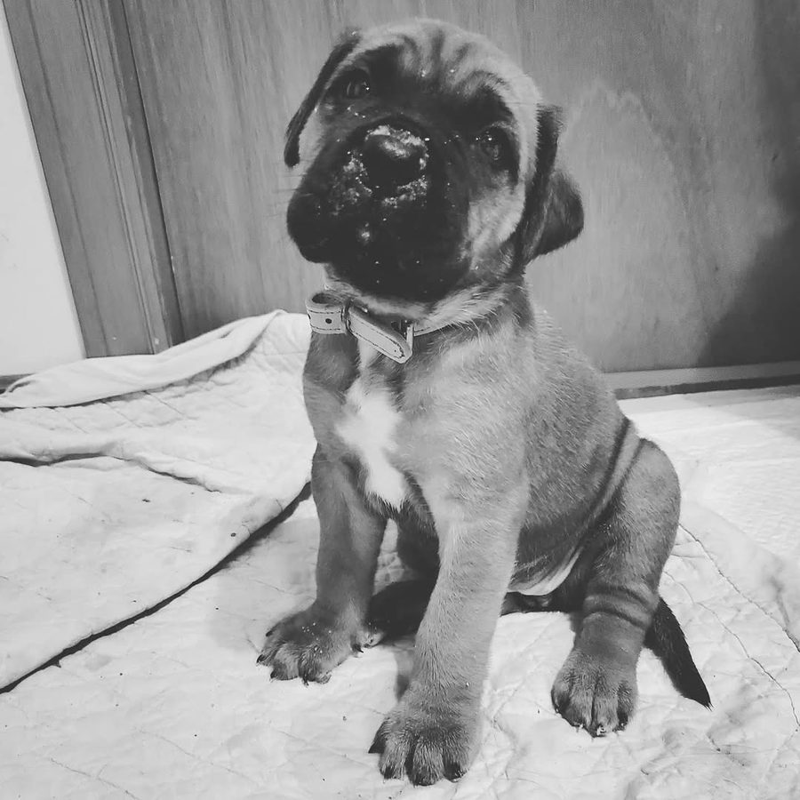

Program 01
Puppy Foundations
Fondation pour chiots
Puppy training in Meteghan, Nova Scotia: early window training for focus, impulse control, and foundational habits that last.
Overview
Where the ACA system begins.
Puppy Foundations is the first course in the Acadia Canine Academy training system. The goal is not just to teach a puppy to sit, lie down or come when called. It is to teach your puppy how to learn during the critical early window, and to teach your family how to keep that learning going.
Behaviours that get repeated become habits. This course makes sure the habits your puppy builds now are the ones you want in an adult dog.
Who it is for
- Puppies aged 8 to 16 weeks, from their first weeks home. No prerequisites.
- Families who want to get the foundation right, with every household member involved. You are part of the training, not an observer.

What is covered
Small lessons, lifelong habits.
What your puppy will learn
- Socialization and confidence building: calm confidence with new places, surfaces, sounds and people, without needing to greet everything
- Leash manners introduction: following you on leash and responding to gentle leash guidance
- Basic commands: sit, down, stay and come, plus a release cue and place
- Bite inhibition and impulse control: a soft mouth, letting go on cue, and waiting for food, toys, doors and greetings
- Mostly rewards, and honest about the rest: your puppy learns mainly through food, play and praise. Like all our programs, Puppy Foundations is balanced, so we also use a few very mild corrections, and we show you exactly how first. If your puppy bites, you gently push your fingers a little farther into its mouth so biting stops being fun, then offer a toy. On leash, it can be as little as one finger pushing on the leash in the direction you want your puppy to go. Nothing we do should hurt or frighten your puppy.
- Name response, engagement, calm handling and settling after play
- Crate training (optional): a calm, comfortable crate routine for families who want one (why we recommend it). Not scored and not needed to graduate.
- Muzzle introduction (optional): teaching your puppy to be happy wearing a muzzle (why it matters), so vet visits and grooming are easier later. Never forced, not scored and not needed to graduate.
- E-collar introduction (optional): five stages, set out below.
What you will learn
- Timing and reward delivery, and how to use a marker
- Leash handling
- Setting up repetitions your puppy can succeed at
- Spotting stress and over-excitement
- When to make things harder, and when to make them easier
- How to stop unwanted habits before they form
E-collar introduction (optional)
We say optional because it is. Some people are not comfortable with these tools, and we understand that. Nobody in our courses is ever made to use one.
- Stage One, the Door Routine: E-collar first, then leash, then the good thing. The leash already means good news to your dog. By putting the e-collar on just before the leash, the collar starts to borrow that good feeling.
- Stage Two, Wearing It Like Any Other Collar: The goal here is a dog that forgets it is wearing anything at all. The remote still stays in the drawer. You are not using the touch at all yet.
- Stage Three, Finding the Lowest Level: In this stage we are looking for one thing: the lowest level your dog can just barely feel. The number does not matter. The dog’s response does. Watch the dog, not the dial.
- Stage Four, Pairing the Touch With Treats: This is the stage where the touch itself becomes good news. The touch comes first, every time. The treat comes right after, every time.
- Stage Five, the Touch as Praise and Guidance: In this last stage we start to use the touch the way we will use it for the rest of your dog’s life: as a quiet “good” and as a gentle way to say “check in with me.”
Not scored and not needed to graduate.
How it works
Short, frequent, measured.
- Intake and baseline assessment. We assess how your puppy learns, what motivates it and where it is starting from. If we see a health or behaviour concern, we may recommend a visit to your veterinarian first.
- Marker and shaping first. We charge the terminal marker while free shaping with food, so your puppy learns that offering behaviours pays.
- Verbal cues next. Cues are added once your puppy offers a behaviour reliably.
- Leash pressure, then loose-leash walking. Your puppy learns to give to gentle leash pressure before we build loose-leash walking.
- Short, frequent practice. Eight sessions with us, plus short practice through the day, with a clear daily plan and homework built around normal family life.
- Measured progress. Progress is tracked against the baseline, and difficulty increases one step at a time. We keep your puppy under threshold, working at a level where it can still think and learn.

Can't make it to Meteghan? Our puppy approach is also in How To Train Your Puppy by Ryan R. McKenzie, a practical guide you can follow at home. Currently out of stock.
Expectations for graduation
Ready for the next stage.
A puppy does not need to be perfect. It needs to be developing in the right direction. Your puppy graduates when its foundation is ready for Basic Obedience, not when a number of weeks has passed. Each area is assessed by the trainer and recorded against your puppy’s starting point.
- Terminal markerUnderstands the marker and works for food and play.
- Engagement and name responseChooses to engage with you and reliably turns to its name.
- Shaped positionsOffers sit, stand, down, place and heel position, learned through shaping.
- Verbal cuesResponds to verbal cues for the positions it has learned.
- Leash pressureGives to gentle leash pressure and follows your movement.
- Loose-leash walkingWalks with you on a loose leash for short stretches.
- Recall, release and stayComes when called away from mild distraction, understands the release, and holds a short stay with you close.
- Impulse control and bite inhibitionCan briefly wait for food, toys, doorways and greetings, and mouths softly, stopping on cue.
- Handling and settleAccepts routine handling calmly and settles again after excitement.
- Confidence and thresholdExplores new places with confidence and stays under threshold, neutral without greeting everything.
- You, the handlerYou can run the foundation exercises on your own.

Optional extras: crate training, a muzzle introduction (never forced) and the e-collar introduction are only for families who choose them. They are not scored and not needed to graduate. See the e-collar introduction above.
Not ready yet? That is not a failure. It tells us what to work on next. We note which areas still need work, adjust the plan, and reassess when your puppy is ready. Puppies develop at different rates.
After graduation: graduates move into Basic Obedience without starting over.
Safety comes first at every stage. A serious health or behaviour concern may mean a referral to your veterinarian, or to the Behaviour Modification program, before training continues.
Start your puppy right.
Tell us about your puppy and we will help you plan the first steps. We typically respond within 1 to 2 business days.
All programs